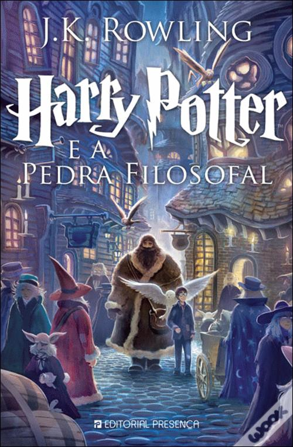
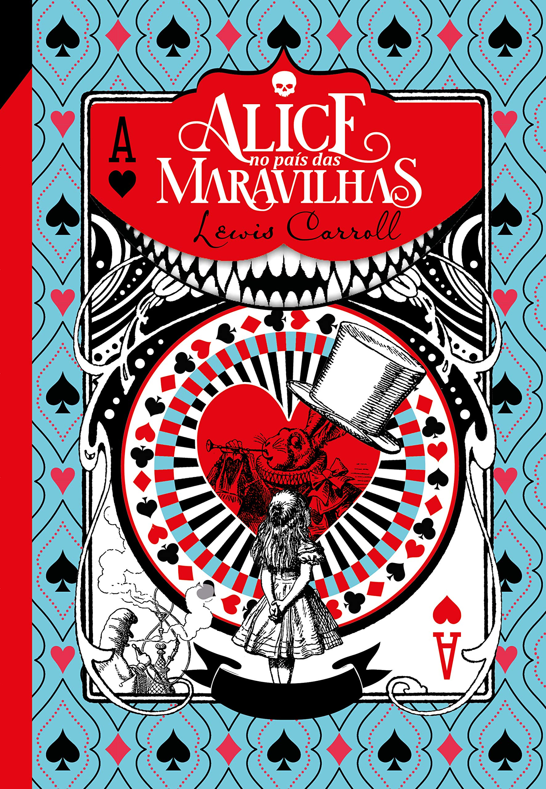

Estante de Livros
Sua biblioteca a um click de distância.
Harry Potter e a Pedra Filosofal.

Sinopse
Harry Potter nunca tinha ouvido falar em Hogwarts até o momento em que as CARTAS
começam a aparecer no capacho do número 4 da rua dos Alfeneiros. Endereçadas com um LACRE PÚRPURA, elas são
repidamente confiscadas por seus tios TERRÍVEIS. E então, no décimo primeiro aniversário de Harry, um homem
GIGANTESCO com olhos luzindo como besouros negros chamado RÚBEO HAGRID entra intempestivamente com uma
notícia ASSOMBROSA: Harry Potter é um bruxo e tem uma vaga na ESCOLA DE MAGIA E BRUXARIA DE HOGWARTS. Uma
aventura inacreditável está para começar!
Fonte:Google Books
| Data da Primeira Publicação |
Autor |
Idioma Original |
Gêneros |
| 26 de junho de 1997 |
J.K. Rowling |
Inglês |
Romance, Literatura infantil, Literatura fantástica, Alta fantasia |
O Senhor dos Anéis: A Sociedade do Anel.

Sinopse
O volume inicial de O Senhor dos Anéis, lançado originalmente em julho de 1954, foi o primeiro grande épico
de fantasia moderno, conquistando milhões de leitores e se tornando o padrão de referência para todas as
outras obras do gênero até hoje. A imaginação prodigiosa de J.R.R. Tolkien e seu conhecimento profundo das
antigas mitologias da Europa permitiram que ele criasse um universo tão complexo e convincente quanto o
mundo real. A Sociedade do Anel começa no Condado, a região rural do oeste da Terra-média onde vivem os
diminutos e pacatos hobbits. Bilbo Bolseiro, um dos raros aventureiros desse povo, cujas peripécias foram
contadas em O Hobbit, resolve ir embora do Condado e deixa sua considerável herança nas mãos de seu jovem
parente Frodo. O mais importante legado de Bilbo é o anel mágico que costumava usar para se tornar
invisível. No entanto, o mago Gandalf, companheiro de aventuras do velho hobbit, revela a Frodo que o objeto
é o Um Anel, a raiz do poder demoníaco de Sauron , o Senhor Sombrio, que deseja escravizar todos os povos da
Terra-média. A única maneira de eliminar a ameaça de Sauron é destruir o Um Anel nas entranhas da própria
montanha de fogo onde foi forjado. A revelação faz com que Frodo e seus companheiros hobbits Sam, Merry e
Pippin deixem a segurança do Condado e iniciem uma perigosa jornada rumo ao leste. Ao lado de representantes
dos outros Povos Livres que resistem ao Senhor Sombrio, eles formam a Sociedade do Anel.
Fonte:Google Books
| Data da Primeira Publicação |
Autor |
Idioma Original |
Gêneros |
| 28 de julho de 1954 |
John Ronald Reuel Tolkien |
Inglês |
Literatura fantástica |
Percy Jackson e o Ladrão de Raios.

Sinopse
Primeiro volume da saga Percy Jackson e os olimpianos, O ladrão de raios esteve entre os primeiros lugares na
lista das séries mais vendidas do The New York Times. O autor conjuga lendas da mitologia grega com
aventuras no século XXI. Nelas, os deuses do Olimpo continuam vivos, ainda se apaixonam por mortais e geram
filhos metade deuses, metade humanos, como os heróis da Grécia antiga . Marcados pelo destino, eles
dificilmente passam da adolescência. Poucos conseguem descobrir sua identidade. O garoto-problema Percy
Jackson é um deles. Tem experiências estranhas em que deuses e monstros mitológicos parecem saltar das
páginas dos livros direto para a sua vida. Pior que isso: algumas dessas criaturas estão bastante irritadas.
Um artefato precioso foi roubado do Monte Olimpo e Percy é o principal suspeito. Para restaurar a paz, ele e
seus amigos – jovens heróis modernos – terão de fazer mais do que capturar o verdadeiro ladrão: precisam
elucidar uma traição mais ameaçadora que fúria dos deuses.
Fonte:Google Books
| Data da Primeira Publicação |
Autor |
Idioma Original |
Gêneros |
| 28 de junho de 2005 |
Rick Riordan |
Inglês |
Mitologia grega, Romance, Ficção juvenil, Literatura fantástica, Alta fantasia |
Alice no País das Maravilhas.

Sinopse
Há mais de 150 anos, a inocência e a curiosidade de uma pequena garota inglesa transformaram-se em um dos
maiores clássicos da literatura infantojuvenil. Alice no País das Maravilhas conta a história de uma menina
que, ao avistar um Coelho vestindo relógio e colete, sem hesitar, entra, às pressas, dentro do esconderijo
do novo amigo. Ao cair na profunda toca, em seu trajeto pela terra das fantasias, Alice conhece o Chapeleiro
Maluco, a Rainha de Copas, o Gato de Cheshire, a Lagarta e diversos outros personagens que lhe possibilitam
viver experiências únicas que se confundem entre o real e o imaginário. Nesse universo, ao diminuir e
aumentar de tamanho, a garota desenvolve o exercício da empatia, cria um grande laço de amizade com um
personagem considerado louco, aprende a conviver com as diferenças, bem como a vencer os seus próprios medos
ao enfrentar a Rainha de Copas. Com isso tudo, aprende grandes lições sobre a vida, o que torna a leitura do
livro instigante. E ainda mais apaixonante, devido às múltiplas possibilidades de interpretação de cada uma
das aventuras eternizadas por Alice.
Fonte:Google Books
| Data da Primeira Publicação |
Autor |
Idioma Original |
Gêneros |
| novembro de 1865 |
Lewis Carrol |
Inglês |
Literatura infantil, Literatura fantástica, Ficção Absurdista, Fantástico |
O Guia do Mochileiro das Galáxias.

Sinopse
Considerado um dos maiores clássicos da literatura de ficção científica, O Guia do Mochileiro das Galáxias
vem encantando gerações de leitores ao redor do mundo com seu humor afiado. Este é o primeiro título da
famosa série escrita por Douglas Adams, que conta as aventuras espaciais do inglês Arthur Dent e de seu
amigo Ford Prefect. A dupla escapa da destruição da Terra pegando carona numa nave alienígena, graças aos
conhecimentos de Prefect, um E.T. que vivia disfarçado de ator desempregado enquanto fazia pesquisa de campo
para a nova edição do Guia do Mochileiro das Galáxias, o melhor guia de viagens interplanetário. Mestre da
sátira, Douglas Adams cria personagens inesquecíveis e situações mirabolantes para debochar da burocracia,
dos políticos, da "alta cultura" e de diversas instituições atuais. Seu livro, que trata em última instância
da busca do sentido da vida, não só diverte como também faz pensar.
Fonte:Google Books
| Data da Primeira Publicação |
Autor |
Idioma Original |
Gêneros |
| 12 de outubro de 1979 |
Douglas Adams |
Inglês |
Ficção científica, Romance, Humor, Ficção científica cômica, Ficção humorística |